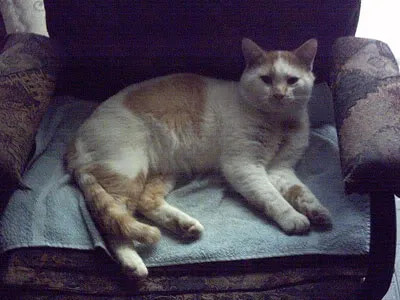
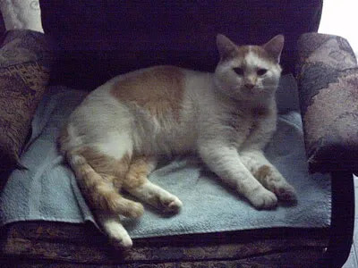

AMKA shop
jan. 20e, 2008 | 04:00 pm
Allez voter pour mes oeuvres sur le site AMKA shop et elles pourront peut-être être vendue en tant que joli poster tendance! Mon pseudo est aradia sur le site. ;)
>>> voir section CREATION GALLERY
>>> voir section CREATION GALLERY
Lien | commentaire? {2} | Add to Memories | Tell a Friend
Journal d'Afrique!
oct. 2e, 2007 | 01:36 pm
Pour lire mon séjour en Afrique du Sud, clicker sur le lien ci-bas:
Lien | commentaire? {1} | Add to Memories | Tell a Friend
UPDATE : Modeling portfolio
aoû. 7e, 2007 | 11:41 am

Lien | commentaire? {2} | Add to Memories | Tell a Friend
[RECHERCHE] Modele pour shooting 28 juillet 2007
juil. 23e, 2007 | 11:40 am
Bonjour!
Je recherche une modèle d'expérience pour me remplacer dans un shooting prévu le 28 juillet, CE samedi. J'ai dû annulé ma présence à ce shoot organisé par une maquilleuse de renom, dans un lieu magnifique, à cause d'un mariage.
Le photographe va chercher la modèle chez elle pour l'amener sur le lieu du tournage qui est à 3 heures de Montréal, dans un joli coin du Québec. Le lieu est une somptueuse maison avec une piscine extérieure, creusée, superbe(je l'ai vu en photo! wow).
Plus d'infos sur demande...
Critères:
- avoir les cheveux foncés et une silouhette plutôt élancée(sans être taille mannequin)
- être à l'aise avec la nudité partielle(body painting)
Répondez ici si intéressées.
Je recherche une modèle d'expérience pour me remplacer dans un shooting prévu le 28 juillet, CE samedi. J'ai dû annulé ma présence à ce shoot organisé par une maquilleuse de renom, dans un lieu magnifique, à cause d'un mariage.
Le photographe va chercher la modèle chez elle pour l'amener sur le lieu du tournage qui est à 3 heures de Montréal, dans un joli coin du Québec. Le lieu est une somptueuse maison avec une piscine extérieure, creusée, superbe(je l'ai vu en photo! wow).
Plus d'infos sur demande...
Critères:
- avoir les cheveux foncés et une silouhette plutôt élancée(sans être taille mannequin)
- être à l'aise avec la nudité partielle(body painting)
Répondez ici si intéressées.
Lien | commentaire? {1} | Add to Memories | Tell a Friend
Jacques Villeneuve - Vaguement
juil. 15e, 2007 | 02:47 am
Un petit vidéoclip dans lequel j'ai joué. Enjoy. ;)
Ils ont mis ma tronche en preview en plus! haha
Ils ont mis ma tronche en preview en plus! haha
Lien | commentaire? {11} | Add to Memories | Tell a Friend
jeu virtuel human-epic
juil. 2e, 2007 | 07:43 pm
J'ai découvert ce jeu par quelqu'un dans ma liste msn et j'en ai parlé par la suite à d'autres. Bien voilà, je vous le présente: human-epic. C'est très simple, tout se passe sur le web. Il faut faire évoluer un homme(ou femme) des cavernes pour qu'il/elle passe à travers les différentes époques de l'humanité. C'est vraiment intéressant et je vous suggère d'aller y faire un tour!
Lien | commentaire? {2} | Add to Memories | Tell a Friend
achat : intuos3 6x8
juin. 18e, 2007 | 10:39 pm
Je cherche présentement à acheter une tablette graphique wacom intuos3 6x8. Je connais déjà quelques magasins qui l'ont à Montréal, mais en bonne acheteuse, je magasine encore pour trouver le prix le plus compétitif. Jusqu'à maintenant c'est 349,95$. J'ai regardé un peu sur ebay, et pour le prix offert ça vaut encore plus la peine que je la commande par le magasin d'infos pour éviter les problèmes. Si vous avez des contacts ou connaissez quelqu'un qui en vend, faites-moi signe! J'apprécierais vraiment.
Lien | commentaire? {2} | Add to Memories | Tell a Friend
UPDATE : modeling side
mai. 27e, 2007 | 09:04 pm
Le site de modeling a été updaté, fresh new look!
Allez le voir!
amelie sorel /// modeling book ///
p.s.: la section vidéos&moviestills comporte encore quelques bugs au niveau des vidéos de type quicktime dans explorer principalement.
Allez le voir!
amelie sorel /// modeling book ///
p.s.: la section vidéos&moviestills comporte encore quelques bugs au niveau des vidéos de type quicktime dans explorer principalement.
Lien | commentaire? {3} | Add to Memories | Tell a Friend
FIGURANTS RECHERCHÉS
mai. 25e, 2007 | 11:59 pm
Universal Pictures tourne "Death race" une sorte de Mad Max des années 2000, cet été à Montréal. Ils n'ont pas besoin de figurants (ça fait changement, tu vas voir) ils ont besoin de GARS DE CHARS!
Full testostérone.
Tous les gars (ou filles hein, sont pas sexistes) libres de maintenant à Novembre, mécaniciens auto avec leurs outils, soudeurs, monteurs, patronistes, dessinateurs techniques, et tous les gars ayant de l'expérience en tôlerie, fabrication, fibre de verre sont les bienvenus pour aller travailler sur les chars qui vont servir dans le film.
Ils doivent appeler Jean-Martin Desmarais (mon Ingénieux) aux productions de l'Intrigue, la boîte d'effets spéciaux, au (514) 737-8700.
Passez le mot!
Source
Full testostérone.
Tous les gars (ou filles hein, sont pas sexistes) libres de maintenant à Novembre, mécaniciens auto avec leurs outils, soudeurs, monteurs, patronistes, dessinateurs techniques, et tous les gars ayant de l'expérience en tôlerie, fabrication, fibre de verre sont les bienvenus pour aller travailler sur les chars qui vont servir dans le film.
Ils doivent appeler Jean-Martin Desmarais (mon Ingénieux) aux productions de l'Intrigue, la boîte d'effets spéciaux, au (514) 737-8700.
Passez le mot!
Source
Lien | commentaire? {1} | Add to Memories | Tell a Friend
PSYKOKRONIK.net : VIRUS ALERT
avr. 3e, 2007 | 02:15 pm
UPDATES: Le site a été nettoyé de son virus Trojan. Il est maintenant sécuritaire de visiter mon portfolio! :)
Lien | commentaire? {3} | Add to Memories | Tell a Friend
Touch of Me
mar. 5e, 2007 | 12:49 pm
Ça s'en vient! :D Je vous rappel que les photographes étaient Leda &St-Jacques!
Touch of Me Mailles/Knitwear

Casting cet après-midi pour Marie St-Pierre, le défilé de la semaine de la mode Montréalaise. J'adore ce qu'elle fait et j'espère bien porter ses créations à son défilé! :)
Touch of Me Mailles/Knitwear
Casting cet après-midi pour Marie St-Pierre, le défilé de la semaine de la mode Montréalaise. J'adore ce qu'elle fait et j'espère bien porter ses créations à son défilé! :)
Lien | commentaire? {11} | Add to Memories | Tell a Friend
imdb!
mar. 1er, 2007 | 10:21 pm
Bon premier mars, plus que 14 jours avant ma fête!
Je suis sur imdb pour ceux qui ne me croyait pas pour 300 ;)
Voir ma fiche ici
De plus je suis citée 2 fois sur leur site, soit avec un accent sur le e et sans. :S Donc, ma figuration pour À vos marques, party! n'est pas sur la même fiche que 300... fais chier royalement.
À compter de Dimanche, c'est "shootings extravaganza week". 3 shoots en moins de 6 jours, c'est quelque chose! :)
Je suis sur imdb pour ceux qui ne me croyait pas pour 300 ;)
Voir ma fiche ici
De plus je suis citée 2 fois sur leur site, soit avec un accent sur le e et sans. :S Donc, ma figuration pour À vos marques, party! n'est pas sur la même fiche que 300... fais chier royalement.
À compter de Dimanche, c'est "shootings extravaganza week". 3 shoots en moins de 6 jours, c'est quelque chose! :)
Lien | commentaire? {2} | Add to Memories | Tell a Friend
Confucius, encore
fév. 28e, 2007 | 10:12 am
Vous vous souvenez de ce cher Confucius? Et bien, il est de retour pour quelques jours à la maison! Trois chats à s'occuper, ça ne sera pas de tout repos! :)

Remember Confucius? Well, he's back again at my place to spend some days! Taking care of 3 cats wont be that easy for me! :)

Remember Confucius? Well, he's back again at my place to spend some days! Taking care of 3 cats wont be that easy for me! :)
Lien | commentaire? {3} | Add to Memories | Tell a Friend

300 : the movie
fév. 18e, 2007 | 06:00 pm
C'est officiel, je vous somme d'aller le voir au cinéma, car je ne ferai jamais partit d'une aussi grosse et hot production de ma vie! Un film de Zack Snyder(Dawn of the Dead) inspiré des bds de Frank Miller(Sin City). Ca promet! En plus, je suis dedans! Une scène de tentation où escalves et concubines se prélassent autour de Xerxès. :P
Il est en salle le 9 mars 2007!!!
I urge you guys to go see this movie wich I played a part in, I was one of the slave girl in the temptation scene with Xerxès! Its gonna be out in theatres by March 9th 2007!!!
Lien vers le site officiel
Lien | commentaire? {10} | Add to Memories | Tell a Friend
Siteweb de ma guilde WoW
jan. 29e, 2007 | 10:28 pm
music: Three Days Grace
Lien | commentaire? {2} | Add to Memories | Tell a Friend
UPDATES : Model side
jan. 15e, 2007 | 02:16 pm
Lien | commentaire? {5} | Add to Memories | Tell a Friend
Post très WoWien : encore
jan. 7e, 2007 | 10:25 pm
W0ot, je suis maintenant lvl 60 à WoW et j'ai commencé à raider à ZG. :D Juste dommage qu'à l'expension la récolte des tier soit pratiquement inutile. Je vais m'en pogner quand même juste parce que je veux une fois en connaître le goût.